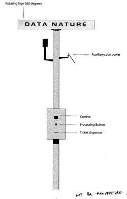
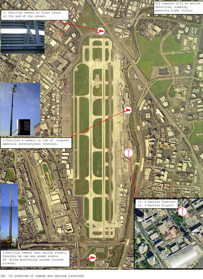

|
Produced in residence at Sally and Don Lucas Artists Programs, Montalvo Arts Center. City-dwellers would never be able to get rid of their fellow urban inhabitants even if they wanted to, as anyone who has ever seen weeds push up through a crack in the tarmac will know.
--Herbert Girardet, The Gaia Atlas of Cities. New directions for sustainable urban living  Airports are awe-inspiring places: concentrated, tangible examples of the wider notion of "technology," the application of scientific knowledge for practical purpose; to travel from point A to point B. But while we are in awe of them, dumbstruck at the noise and spectacle of a jetliner taking off or the dizzying complexity of an air traffic radar screen, scratch beneath the surface of these massive man-made structures and you start to find a much more intimate, human-scale landscape. A family of burrowing owls, for instance, that live between parallel runways, unfazed by landing aircraft, or the weekly baggage handlers' barbeque--the grill positioned just out of sight of the trapped, air-conditioned passengers waiting in the departure lounges. DataNature is a multi-site electronic artwork that reveals and celebrates the strange, secret beauty and interconnectedness of seemingly disparate natural and man-made aspects of Norman Y. Mineta San Jose International Airport and its environs.
 The physical system of DataNature will consist of two elements: - two "ticket machines" with animated revolving signage to attract passers-by
- a series of remote cameras and other sensors selectively placed around the airport .
The public will be invited to push a button on the DataNature "ticket machine" to receive a souvenir ticket. The dispensed ticket will superficially have the look and feel of a flight ticket/boarding card, but on closer inspection it features a montage of live and pre-collected images and stories from the Airport and its environs. Each ticket will be dynamically and uniquely createde. The data generated by the Airport's day-to-day workings will be selectively mixed with data from strategically placed sensor interventions to create thought-provoking visual juxtapositions. For instance, the printout may juxtapose the latest infra-red images of nocturnal Airport wildlife with "traffic graphic" showing the statistical ebb and flow of recent airplane movements. The artwork is located both outside the domestic arrivals terminal at the Airport and at the intersection of the Paseo San Antonio at Market St. The intent of the dual locations is to reinforce the connection between the Airport, as one of the major gateways to the ZeroOne San Jose Festival event, and Downtown.  As artists we are inspired by people's (local residents', frequent travelers', airport employees'--and our own) love-hate relationship with airports, and with technology in general. DataNature is an attempt to capture and visually articulate this tumultuous relationship ... our emotional zigzagging between nostalgia for a simple life and cyberpunk fantasy for being connected to everything everywhere ... |